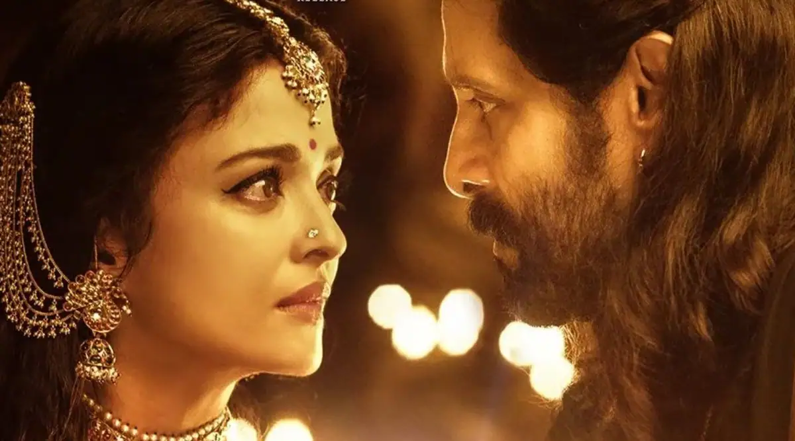

Ponniyin Selvan is the story of the Chola kingdom that shows the conspiracies and ill-minded politics that happened for the throne, some 1000 years back.First things first, one should have a basic idea of who’s who in the film. The voice-over, in the beginning,gives a little insight but the names and places having all the Tamil native names make it tough for the unversed to connect the dots.
Overall, PS 1 has got very strong content and a talented star cast, but the dull narrative and missing emotional connection with the characters do not make it a phenomenal watch. From names to places, history to nativity, PS 1 has fair chance to connect to the Tamil audience than to the Telugu audience. Having seen the films with large scale and grandeur, like RRR and Baahubali, Ponniyin Selvan might look normal to the Telugu audience. The openings of PS 1 are huge across the globe and it has to be seen how the movie advances at the box office.